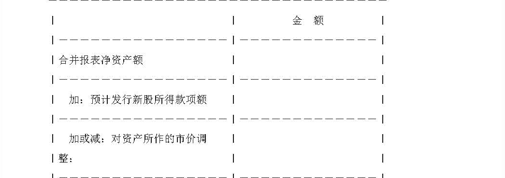
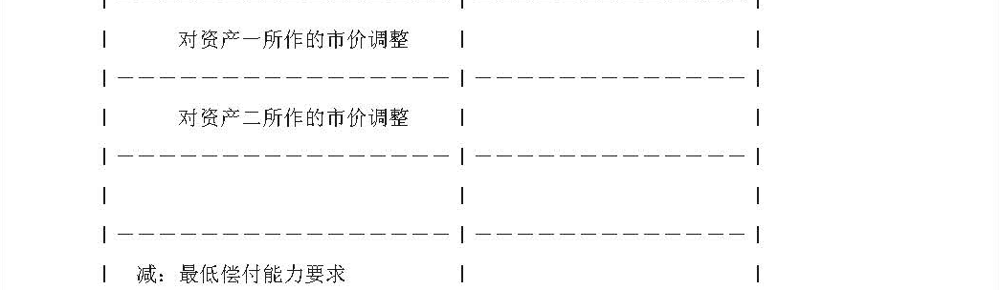
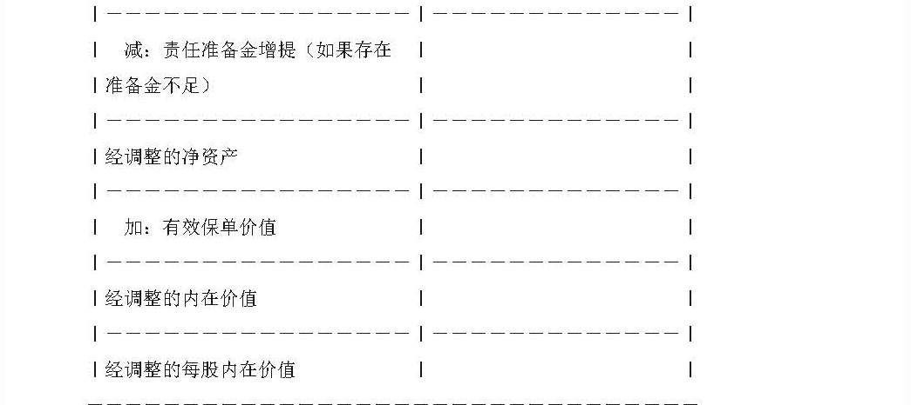

|
资料名称：公开发行证券公司信息披露编报规则第3号——保险公司招股说明书内容与格式特别规定
|
| 手机阅读请扫我 |
|
公开发行证券公司信息披露编报规则第3号——保险公司招股说明书内容与格式特别规定 第一条 为规范公开发行股票保险公司（以下简称保险公司）的信息披露行为，保护投资者的合法权益，依据《中华人民共和国公司法》、《中华人民共和国证券法》等法律法规，制定本规定。 第二条 保险公司为首次公开发行股票编制招股说明书时，除应遵循中国证券监督管理委员会（以下简称中国证监会）有关招股说明书内容与格式准则的一般规定外，还应遵循本规定的要求。 第三条 保险公司应披露下述财务资料以及相关计算方法与依据：
第四条 保险公司应披露聘请的精算师事务所和经办精算师，以及精算师费用。 第五条 保险公司应披露各种行业风险和公司自身风险。对这些风险因素能作出定量分析的，应进行定量分析；不能作出定量分析的，应进行定性描述。
第六条 保险公司应建立健全内部控制制度，并在招股说明书正文中专设一部分，对其内部控制制度的完整性、合理性和有效性作出说明。
第七条 保险公司募集资金中计划用于增设分支机构的部分，应披露相关计划、所需资金数额、拟设地点等内容。仅用以增加资本的募集资金，可不必说明其具体投向。 第八条 保险公司应披露公司下述情况：
第九条 保险公司应披露最近三年、最近一期原保险业务收入、费用与利润的有关情况（可采取列表式），包括按险种大类划分的保费收入、分出保费、计提的未到期责任准备金、赔款支出、给付支出、退保金与手续费支出等。
第十条 保险公司应扼要披露各主要险种保险费率的厘定依据与方法，包括预定利率、预定给付率与预定附加费率（人身保险），预定赔付率、预定附加费率（财产保险）等的确定情况等。 第十一条 保险公司应披露最近三年末、最近一期末各主要险种责任准备金的计提方法与依据。提存数与法定提存数存在重大差异的，应披露差异情况及其形成原因。
第十二条 保险公司应披露前一年末的实际资产、实际负债与实际偿付能力，以及法定最低偿付能力。当实际偿付能力较低时，应披露其原因，已采取及拟采取的措施。
第十三条 保险公司应披露最近一年末、最近一期末承担保险责任列前十位的保单保险责任，并披露相应采取的风险防范措施等。 第十四条 保险公司应披露尚处有效期的重大分保事项的有关情况。 第十五条 保险公司应按如下格式披露最近一年末经调整的净资产以及内在价值：    第十六条 保险公司应披露最近三年、最近一期重要资金运用项目的有关情况（可采用列表式），包括投资于银行存款、买卖政府债券、买卖企业债券、投资证券基金与拆出资金等项目的期末余额与各期收益率等。 第十七条 保险公司应披露最近三年、最近一期下述财务指标：自留保费与所有者权益之比，自留保费增长率，分保比率，速动比率，保险业务成本率（财产保险），保单负债综合成本（人身保险），承保利润与投资收益两年平均比率，利润总额与所有者权益之比，准备金、权益与自留保费之比，准备金与权益之比，赔付率（财产保险），给付率（人身保险）与退保率（人身保险）。
第十八条 保险公司在申请公开发行股票前，应根据现存的重大潜亏，包括潜在利差损与不良贷款等，提足各项损失准备或予以剥离等，据此确定原股东投入的净资产，并披露为这类问题已采取、拟采取的措施。 第十九条 保险公司应聘请有保险公司审计经验的、具有执行证券期货相关业务资格的会计师事务所，按中国独立审计准则对其依据中国会计和信息披露准则和制度编制的法定财务报告进行审计。此外，应增加审计内容，聘请获中国证监会和财政部特别许可的国际会计师事务所，按国际通行的审计准则，对其按国际通行的会计和信息披露准则编制的补充财务报告进行审计。
第二十条 保险公司应将精算师评估报告作为招股说明书附录予以披露。 第二十一条 本规定由中国证监会负责解释。 第二十二条 本规定自发布之日起施行。 （2018.11.09更新） |
|
声明 本资料来源于网络，版权归原作者所有，若需引用请注明出处，引用前请与原件进行核对，请勿用于商业用途！ |
|
声明 本资料来源于网络，版权归原作者所有，若需引用请注明出处，引用前请与原件进行核对，请勿用于商业用途！ |
| 分享按钮 |
|
微信扫一扫前往微店 |
|
|
|
|